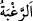

90. Biz onun da duâsını kabul ettik ve ona Yahya’yı verdik; eşini de kendisi için
(çocuk doğurmaya) elverişli kıldık. Onlar (bütün bu peygamberler), hayır işlerinde
koşuşurlar, umarak ve korkarak bize yalvarırlardı; onlar, bize karşı derin saygı
içindeydiler.
“Biz onun da” çocuk isteğine dâir “duâsını kabul ettik ve ona Yahya’yı verdik;”
Ancak bu duânın kabûlü, onun kendisine vâris olması konusunda değildir. Çünkü meşhur
olan görüşe göre Yahyâ (a.s.), babasının ölümünden önce öldürülmüştür. İbrahim
(a.s.)’ın babası hakkındaki duâsının kabûl edilmemesi onun îtibarını düşürmediği gibi
bu durum da Zekeriyyâ (a.s.)’ın şânına bir halel getirmez. Çünkü her ne kadar bütün
peygamberlerin duâsı müstecâb olsa da, ilâhî hikmete binâen bâzı duâların eseri bu
dünyada görülmez.
“Eşini de” İmrân veya Fâkûd kızı Îşâ’yı da “kendisi için” çocuk doğurmaya
“elverişli kıldık.” Yâni önce kısır olduğu halde onu çocuk doğurmaya müsâit hâle
getirdik. Çünkü onun, doksan dokuz yaşına gelene kadar hiç çocuğu olmamıştı.
“Onlar” bütün bu peygamberler, “hayır işlerinde koşuşurlar,” Buradaki “onlar”
zamiri, Zekeriyyâ (a.s.), hanımı ve Yahyâ (a.s.)’a ya da bundan önceki âyetlerde
zikredilen peygamberlere râcidir. Cenâb-ı Hakk’ın onlara özel nimetler ihsân etmesinin
gerekçesini ortaya koymaktadır. Meselâ, Mûsâ ve Hârûn (a.s.)’a Furkân (Tevrât)’ı
vermesi, İbrahim (a.s.)’a ateşi serin kılması ve söndürmesi, Lût (a.s.)’ı kavmine inen
azabdan kurtarması, Nûh (a.s.) ile berâberindekileri gemi vâsıtasıyla inanmayan
kavminin kötülüklerinden ve büyük tûfandan kurtarması ve önceki peygamberlere ihsân
ettiği diğer nîmetler gibi. Yâni onlar hayırların aslında sebâtkâr ve karar kılmış olmakla
birlikte her türlü hayır yollarına da koşuşurlardı. İşte “el-hayrât” kelimesinden önce
“ilâ” harf-i cerrinin değil de “fî” harf-i cerrinin tercih edilmesindeki sır budur. Çünkü
“ilâ”, onların hayrın aslından hâriç olduklarını bildirir ki bu maksada terstir. Nitekim şu
âyette böyle bir durum söz konusudur:
“Rabb’inizden bir
bağışa ve … cennete koşun.” (Âl-i İmrân, 3/133)
Râgıb şöyle der: “Hayır, her hâlükârda herkesin rağbet ettiği şeydir. Bu, mutlak
hayırdır. Şer ise bunun zıddıdır.”
Lütuf ve cemâli “umarak,” kahır ve celâlden “korkarak bize yalvarırlardı;” Ya da
bize rağbet ederek, bizden gayrısından sakınarak bize duâ ederlerdi.
“
”, irâdede genişliktir. “
” denildiği zaman bir şeye hırsla yönelmeyi
ifade eder. “
” ise bir şeye rağbet etmemeyi ve ondan el etek çekmeyi anlatır. “er-
Rağbetü” çok ihsan anlamına da gelir ki bu kelimenin aslına uygundur. Çünkü “er-
rağbetü”, bir şeyde genişlik, bolluk demektir. Reğâib gecesinin adı da buradan
gelmektedir. ‘Bol ihsanlar gecesi’ demektir. Allah dilediğine bol ihsanlar verir,